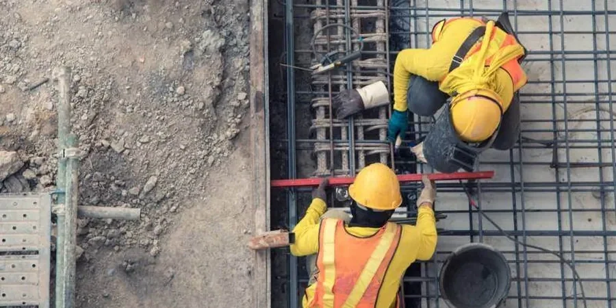

Mit über 1,5 Millionen Einwohnern und einer Höhe von 519 Metern über dem Meeresspiegel wächst München stetig nach oben und unten. Jeder Neubau, jede Nachverdichtung und jedes Infrastrukturprojekt trifft hier auf eine komplexe Schotterebene mit eingelagerten Linsen aus Seeton und Flugsand. Eine bodenmechanische Untersuchung ist deshalb kein bürokratischer Akt, sondern ein technisches Werkzeug, das Tragfähigkeit, Setzungsverhalten und Grundwassereinfluss objektiv messbar macht. Das Labor wertet Bohrkerne, Sondierungen und Proben nach DIN 4020 und den ergänzenden Regelwerken der Eurocode-7-Reihe aus, damit Sie als Bauherr verlässliche Kennwerte für Gründung und Erdbau erhalten. Ergänzend zur bodenmechanischen Untersuchung setzen wir bei tiefen Aufschlüssen oft die Korngrößenanalyse ein, um die Sieblinie exakt zu bestimmen und die Frostempfindlichkeit des anstehenden Kieses nach ZTV E-StB zu klassifizieren. Gerade in stadtnahen Quartieren mit heterogenen Auffüllungen reduziert diese Voruntersuchung das Nachtragsrisiko erheblich.

Die Münchener Schotterebene täuscht oft Homogenität vor, doch eingelagerte Seetone können die Setzungsprognose um den Faktor drei verändern.
Methodik und Umfang
Münchens Untergrund ist ein geologisches Archiv der letzten Eiszeiten. Die quartären Kiese der Münchener Schotterebene erreichen Mächtigkeiten von über 100 Metern und werden von tertiären Feinsedimenten unterlagert. Diese Wechsellagerung führt zu stark variierenden Steifigkeiten auf kurzer Distanz. Eine bodenmechanische Untersuchung in diesem Umfeld muss daher zwingend die lokale Heterogenität abbilden – mit engmaschigen Sondierungen und gestörten wie ungestörten Proben in verschiedenen Tiefen. Im Labor laufen dann triaxiale Scherversuche, Kompressionsversuche und Rahmenscherversuche, die den wirklich mobilisierbaren Reibungswinkel und die Kohäsion des Bodens liefern. Für die Gründungsberatung kombinieren wir diese Werte mit den Ergebnissen aus der CPT-Versuch, die eine lückenlose Schichtaufnahme liefert und vor allem bei weichen Einschaltungen die Spitzendruck- und Mantelreibungsprofile präzise auflöst. So entsteht ein konsistentes Baugrundmodell, das weder auf der unsicheren Seite noch unnötig teuer dimensioniert.
Technisches Referenzbild — Munich
Lokale Besonderheiten
Ein achtgeschossiges Wohn- und Geschäftshaus in der Arnulfstraße, geplant auf einer ehemaligen Kiesgrubenverfüllung, zeigte im ersten Baugrundmodell rechnerisch zulässige Setzungen. Erst die vertiefte bodenmechanische Untersuchung mit ungestörten Proben aus 7 m Tiefe offenbarte eine geringmächtige, aber hochplastische Seetonschicht, die unter Dauerlast zu Kriechverformungen neigt. Ohne diesen Befund wäre die Bodenplatte nach drei Jahren bis zu 6 cm differentiell gesackt. Solche Szenarien lassen sich mit einem frühzeitigen, normgerechten Laborprogramm vermeiden. Das Risiko liegt nicht im offensichtlich schlechten, sondern im unentdeckt gebliebenen Baugrund. Ein belastbares Gutachten mit validen Kennwerten für Reibungswinkel, Kohäsion und Steifigkeit ist die günstigste Versicherung gegen spätere Mangelrügen und Verstärkungsmaßnahmen, die schnell das Zehnfache der Untersuchungskosten ausmachen.
Bodengruppe nach DIN 18196, Frostempfindlichkeitsklasse
Versuchsarten (Scherfestigkeit)
Triaxialversuch (CD/CU), Rahmenscherversuch
Kompressibilität
Steifemodul Es, Drucksetzungsdiagramm
Grundwasseranalyse
Betonaggressivität nach DIN 4030, Sulfatgehalt
Berichtsumfang
Baugrundgutachten mit Gründungsempfehlung
Zugehörige Fachleistungen
01
Scherfestigkeits- und Verformungsparameter
Triaxialversuche (CD, CU, UU) und Einaxial-Druckversuche an ungestörten und gestörten Proben zur Bestimmung von Reibungswinkel, Kohäsion und Spannungs-Dehnungs-Verhalten. Inklusive Spannungswegauswertung für FE-Berechnungen.
02
Baugrundklassifikation und Zustandsgrenzen
Klassifikation nach DIN 18196, Bestimmung der Atterberg-Grenzen, Korndichte, Glühverlust und Wassergehalt. Mit Angabe der Konsistenzzahl Ic und Lagerungsdichte als direkte Eingangsgrößen für Pfahl- und Flachgründungsbemessungen.
Geltende Normen
DIN 4020: Geotechnische Untersuchungen für bautechnische Zwecke, DIN EN ISO 17892: Geotechnische Erkundung und Untersuchung – Laborversuche an Bodenproben, DIN 18196: Bodenklassifikation für bautechnische Zwecke, Eurocode 7 (DIN EN 1997-1/NA): Entwurf, Berechnung und Bemessung in der Geotechnik, DIN 4030: Beurteilung betonangreifender Wässer, Böden und Gase
Häufige Fragen
Was kostet eine bodenmechanische Untersuchung in München typischerweise?
Der Aufwand steigt mit der Anzahl der zu untersuchenden Schichten und der erforderlichen Prüfverfahren, insbesondere wenn triaxiale Scherversuche oder Konsolidationsversuche hinzukommen.
Welche Vorteile bringt eine bodenmechanische Untersuchung für kleinere Bauvorhaben?
Auch bei einem Einfamilienhaus oder einer Doppelhaushälfte liefert sie objektive Kennwerte für die Bemessung der Bodenplatte und vermeidet Überdimensionierung. Zudem dokumentiert sie die Baugrundverhältnisse vor Baubeginn, was bei späteren Setzungsschäden die Beweislage erheblich verbessert.
Wie lange dauert die Laborphase für die bodenmechanische Untersuchung?
Die Standardklassifikation mit Sieblinie und Konsistenzgrenzen liegt nach etwa fünf bis sieben Werktagen vor. Zeitbestimmende Versuche wie der Triaxialversuch oder der Kompressionsversuch benötigen aufgrund der Konsolidierungsphasen meist zwei bis drei Wochen bis zur vollständigen Auswertung.
Kann man aus der bodenmechanischen Untersuchung direkt die zulässige Bodenpressung ableiten?
Ja, das Gutachten enthält auf Basis der ermittelten Scherparameter und Steifigkeiten einen Bemessungsvorschlag für die zulässige Sohlspannung nach EC 7, getrennt nach Grundbruch- und Setzungskriterium. Für Pfahlgründungen werden Mantelreibungs- und Spitzendruckwerte abgeleitet.
Standort und Servicegebiet
Wir betreuen Projekte in Munich und seinem Großraum.